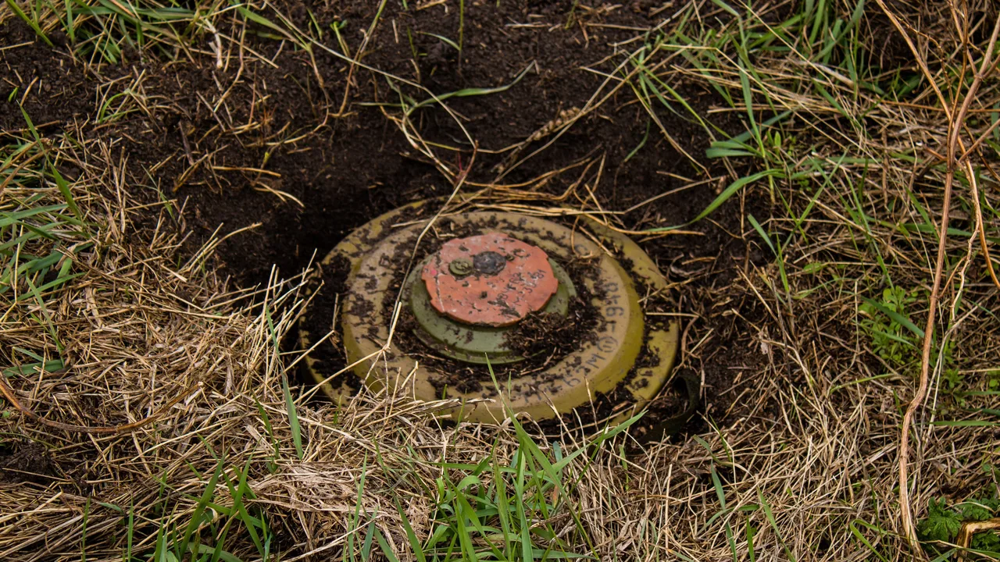

Researchers at ADAMnetworks have identified 'Underminr', a domain-fronting-like exploit that abuses the siloed operation of DNS and CDN systems to allow attackers to route malicious traffic through trusted websites, affecting 42% of global websites.
ADAMnetworks 的研究人员发现了 'Underminr'，这是一种类似 domain fronting 的利用手法，通过滥用 DNS 和 CDN 系统的孤立运行，允许攻击者通过受信任的网站路由恶意流量，影响全球 42% 的网站。
Key Points
- Underminr is a successor to domain fronting, exploiting the mismatch between DNS resolution and CDN routing.
- Attackers use a trusted domain's DNS lookup to pass protective filters, then specify a different (malicious) domain in the SNI/TLS handshake.
- ADAMnetworks found 42% of global websites (51% in the US) are vulnerable; China's regulated internet has <9%.
- Mitigation involves CDN 'bucketizing' (grouping domains by reputation, as done by Fastly) or moving sites off vulnerable CDNs.
- The exploit is already being used in the wild for C2, scams, and data exfiltration.
Context & Contrast
Unlike the original domain fronting (2018), which was mitigated by CDNs checking HTTP Host vs. SNI, Underminr exploits the DNS vs. SNI mismatch, a layer that CDNs do not cross-reference. This represents a regression in the security posture of the internet's routing infrastructure. Prior work focused on application-layer header manipulation; this shifts the attack to the DNS resolution layer, which is typically considered a trust boundary for filtering.
Why It Matters
This matters because it undermines a fundamental security assumption: that DNS filtering and reputation-based blocking are sufficient to prevent malicious traffic from leveraging trusted infrastructure. For system security, it shows how architectural decoupling (DNS vs. CDN) creates a new class of network-level confusion attacks, analogous to TOCTOU or confused deputy problems in OS design. It also has direct implications for software supply-chain security, as CDN-hosted package registries or update servers could be used to serve malicious payloads under a trusted domain.
Critical Take
The article is based on a single vendor's (ADAMnetworks) research and claims of active exploitation, but no specific CVEs or exploit code are provided. The '42% vulnerable' metric is based on scanning top 5M domains, but the practical exploitability depends on the attacker's ability to control a domain hosted on the same CDN edge IP. The mitigation (bucketizing) is a CDN-side fix, not a protocol-level patch, meaning the root cause (DNS/CDN silo) remains. The claim that 'no simple fix exists' may be overstated; TLS Encrypted Client Hello (ECH) could theoretically obscure SNI, but this is not discussed.
What to Watch
- Track if major CDNs (Cloudflare, Akamai, Amazon CloudFront) adopt 'bucketizing' or similar reputation-based grouping.
- Monitor for CVEs or detailed exploit PoCs related to Underminr.
- Watch for TLS ECH (Encrypted Client Hello) adoption as a potential long-term fix.
- Look for research on cross-layer verification (DNS + SNI + HTTP Host) as a new security primitive.
- Observe if this technique is used in software supply-chain attacks (e.g., hijacking CDN-hosted update endpoints).
要点
- Underminr 是 domain fronting 的演进，利用了 DNS 解析和 CDN 路由之间的不匹配。
- 攻击者使用受信任域的 DNS 查询通过防护过滤器，然后在 SNI/TLS 握手中指定一个不同的（恶意）域。
- ADAMnetworks 发现全球 42% 的网站（美国为 51%）存在漏洞；中国受监管的互联网低于 9%。
- 缓解措施包括 CDN '分桶'（按声誉对域进行分组，如 Fastly 所做）或将站点移出易受攻击的 CDN。
- 该利用已在野外被用于 C2、诈骗和数据窃取。
背景与对比
与最初的 domain fronting（2018 年）不同，后者通过 CDN 检查 HTTP Host 与 SNI 得到缓解，而 Underminr 利用了 DNS 与 SNI 的不匹配，这是 CDN 不会交叉引用的层。这代表了互联网路由基础设施安全态势的倒退。先前的工作侧重于应用层头部操作；这次将攻击转移到 DNS 解析层，该层通常被视为过滤的信任边界。
重要性
这很重要，因为它破坏了一个基本的安全假设：即 DNS 过滤和基于声誉的阻止足以防止恶意流量利用受信任的基础设施。对于系统安全而言，它展示了架构解耦（DNS 与 CDN）如何创建一类新的网络级混淆攻击，类似于操作系统设计中的 TOCTOU 或 confused deputy 问题。它还对软件供应链安全有直接影响，因为 CDN 托管的包注册表或更新服务器可能被用来在受信任的域下提供恶意负载。
批判性视角
该文章基于单一供应商（ADAMnetworks）的研究和声称的活跃利用，但未提供具体的 CVE 或利用代码。'42% 存在漏洞'的指标基于对前 500 万个域的扫描，但实际可利用性取决于攻击者能否控制托管在同一 CDN 边缘 IP 上的域。缓解措施（分桶）是 CDN 端的修复，而非协议级别的补丁，这意味着根本原因（DNS/CDN 孤岛）仍然存在。'没有简单的修复方法'的说法可能被夸大；TLS Encrypted Client Hello (ECH) 理论上可以隐藏 SNI，但本文未讨论。
后续关注
- 关注主要 CDN（Cloudflare、Akamai、Amazon CloudFront）是否采用'分桶'或类似的基于声誉的分组。
- 监控与 Underminr 相关的 CVE 或详细的利用 PoC。
- 关注 TLS ECH（Encrypted Client Hello）的采用情况，作为潜在的长期修复方案。
- 寻找关于跨层验证（DNS + SNI + HTTP Host）作为新安全原语的研究。
- 观察此技术是否被用于软件供应链攻击（例如劫持 CDN 托管的更新端点）。
